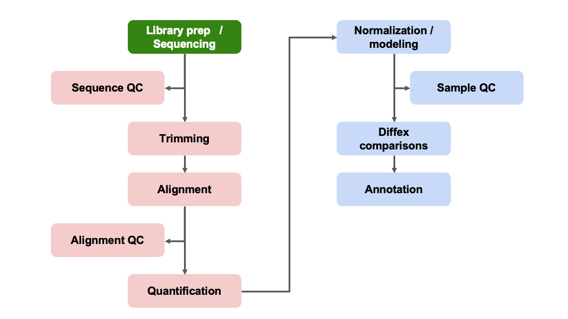

Day 2 - Module 07: DESeq2 Initialization
UM Bioinformatics Core
2022-08-03
Objectives:
- ‘Unblind’ our sample IDs
- Understand possible confounding factors
- Understand the impact of batches or additional covariates
- Filter count table
1 Differential Expression Workflow
Here we will proceed setting up the inputs needed to initialize DESeq2 before testing for differential expression.

2 DESeq2 objects
Bioconductor software packages often define and use custom classes within R to store data in a way that better fits expectations around biological data, such as illustrated below from Huber et al. 2015.

These custom data structures have pre-specified data slots, which hold specific types/classes of data and therefore can be more easily accessed by functions from the same package.
To create the DESeqDataSet we need two tables:
a count matrix (which we already loaded)
a table that assigns the condition labels for each sample (which we will generate below).
3 Sample Information
For this representative dataset, we have somewhat limited information from public records, but we know these samples were isolated from either wild-type or knock-out T-cells harvested from control mice or isolated from previously transplanted mice.
3.1 Generate Sample Table
Our next step will be to describe the samples within our R session, so that we make the proper comparisons with DESeq2. The first step is to check the sample names from the count table.
colnames(count_table)## [1] "SRR7777895" "SRR7777896" "SRR7777897" "SRR7777898" "SRR7777899" "SRR7777900"When we looked at our count_table, our samples are
blinded, e.g. the sample names don’t correspond to any of the expected
treatment groups. So we will need to specify which sample IDs connect to
which experimental conditions.
Since there are a large number of samples (and to increase the reproduciblity of our code), we would generate a sample information table in excel and exported it as a ‘.csv’ file so that it is in a ‘plain text’ format that can be easily loaded into our R session.
Click for sample naming conventions
A critical aspect of creating a sample sheet in excel is to avoid using spaces or characters that have special uses in R, such as dashes or parentheses. Simple sample group names are best. If you are unfamilar with ‘.csv’ files or how to generate them, there are tutorials available to guide you through the process.
We’ll load our ‘pre-made’ sample information sheet,
samplesheet.csv, to unblind our samples.
samplesheet <- read.table("../data/samplesheet.csv",
sep = ",",
header = TRUE,
row.names = 1)samplesheet <- read.table("data/samplesheet.csv",
sep = ",",
header = TRUE,
row.names = 1)
head(samplesheet)Checkpoint: If you have loaded
samplesheet, please indicate with the green ‘check’ button.
Otherwise, please use the red ‘x’ button to have the command
repeated
How are the treatment groups encoded in the table we just loaded?
unique(samplesheet$condition)## [1] "plus" "minus"Next, we’ll format our table so that we have the appropriate data type (an ordered factor) for DESeq2 to recognize our treatment groups and appropriately compare samples.
samplesheet$condition <- factor(samplesheet$condition,
levels = c('minus', 'plus'))
unique(samplesheet$condition)## [1] plus minus
## Levels: minus plusNotice that we set the levels in a particular order. This is important for setting the ‘Control’ group as the denominator in our comparisons when we setup our DESeq2 model. The group name should be last if there are only two groups & first if there are only three groups to generate default pair-wise comparisons.
Before we proceed, we need to make sure that the sample labels (column names) in the count table match the sample information table (row names), including the order.
If the sample labels don’t match, then we will see an error and need to correct the labels prior to proceeding. Checking the sample information table is extremely important to ensure that the correct samples are grouped together for comparisons.
all(colnames(count_table) == rownames(samplesheet))## [1] TRUEThis line of code checks if both the identity and order match between
our count_table and our samplesheet. If, in
the course of using your own data, this ever returns FALSE,
try using the match() function to rearrange the columns of
count_table (or the rows of samplesheet) to
get them to match.
Checkpoint: If you your sample info check
returns TRUE, please indicate with the green ‘yes’ button.
Otherwise, please use the red ‘x’ button to have the command
repeated
4 Creating DESeq2 object
To create the DESeqDataSet we will need the
count_table and the samplesheet. We will also
need a design formula to specify our model.
4.1 Making model choices
The design formula specified informs many of the DESeq2 functions how to treat the samples in the analysis, specifically which column in the samaple metadata table contains the experimental design.
In this case, we aren’t aware of any covariates that should be considered in our comparisons. However, if there are additional attributes of the samples that may impact the DE comparisons, like sex, date of collection, or patient of origin, these should be added as additional columns in the sample information table and added to a design formula.
Click for Note
More complex questions, including determining if a fold-change due to treatment is different across groups, such as patient samples, “interaction terms” can be included in the design formula, such as outlined in this support thread.The design formula specifies the column(s) in the metadata table and
how they should be used in the analysis. For our dataset we only have
one column we are interested in, that is condition. This
column has three factor levels, which tells DESeq2 that for each gene we
want to evaluate gene expression change with respect to these different
levels.
## Create DESeq object, line by line
dds <- DESeqDataSetFromMatrix(countData = count_table,
colData = samplesheet,
design = ~ condition)## converting counts to integer modeCheckpoint: If you see dds in your
environment panel, please indicate with the green ‘check’ button.
Otherwise, please use use the red ‘x’ button in your zoom reaction panel
to have this step repeated. You can use the red ‘x’ to be put in a
breakout room for help
Click for how to model batch effects with DESeq2
Differences between samples can also be due to technical reasons, such as collection on different days or different sequencing runs. Differences between samples that are not due to biological factors as called batch effects. We can include batch effects in our design model in the same way as covariates, as long as the technical groups do not overlap, or confound, the biological treatment groups. Let’s try add some additional meta-data information where we have counfounding batch effects and create another DESeq2 object.
#samplesheet
samplesheet$batch <- factor(c(rep(c("Day1"), 3),
rep(c("Day2"), 3),
rep(c("Day3"), 3),
rep(c("Day4"), 3)),
levels = c("Day1", "Day2", "Day3", "Day4"))
dds_batch <- DESeqDataSetFromMatrix(countData = count_table,
colData = samplesheet,
design = ~ batch + condition)5 Pre-filtering
While not necessary, pre-filtering the count table helps to not only reduce the size of the DESeq2 object, but also gives you a sense of how many genes were reasonably measured at the sequencing depth generated for your samples.
Here we will filter out any genes that have less than 10 counts across any of the samples. This is a fairly standard level of filtering, but can filter data less/more depending on quality control metrics from alignments and sequencing depth or total number of samples.
keep <- rowSums(counts(dds)) >= 10
dds <- dds[keep,]Notice how the dds object now has less elements after
filtering, so there were quite a number of genes that were not measured
in our experiment.
Checkpoint: Questions?
5.0.0.1 [Optional exercise]: Adding covariates to sample information
You can test out manually adding a covariate to our
samplesheet data table and then create a new DESeq2
object.
Click for how to add a covariate to sample information
head(samplesheet)
samplesheet$patient <- factor(rep(c("P1", "P2", "P3"), 4), levels = c("P1", "P2", "P3"))
head(samplesheet)Notice how we avoid starting with a number our patient covariate labels since R doesn’t like that.
dds_patient <- DESeqDataSetFromMatrix(countData = count_table,
colData = samplesheet,
design = ~ patient + condition)6 Summary
In this section, we:
- Loaded the necessary input files into our R session
- Discussed model design for DESeq2
- Initialized a DESeq2 data set
- Filtered our count data
Now that we’ve created our DESeq2 objects, including specifying what model is appropriate for our data, and filtered our data, we can proceed with assessing the impact of the experimental conditions on gene expression across our samples.
7 Sources
Training resources used to develop materials:
- HBC DGE setup: https://hbctraining.github.io/DGE_workshop/lessons/01_DGE_setup_and_overview.html
- HBC Count Normalization: https://hbctraining.github.io/DGE_workshop/lessons/02_DGE_count_normalization.html
- DESeq2 standard vignette: http://bioconductor.org/packages/devel/bioc/vignettes/DESeq2/inst/doc/DESeq2.html
- DESeq2 beginners vignette: https://bioc.ism.ac.jp/packages/2.14/bioc/vignettes/DESeq2/inst/doc/beginner.pdf
- Bioconductor RNA-seq Workflows: https://www.bioconductor.org/help/course-materials/2015/LearnBioconductorFeb2015/B02.1_RNASeq.html
- CCDL Gastric cancer training materials: https://alexslemonade.github.io/training-modules/RNA-seq/03-gastric_cancer_exploratory.nb.html
- CCDL Neuroblastoma training materials: https://alexslemonade.github.io/training-modules/RNA-seq/05-nb_cell_line_DESeq2.nb.html
These materials have been adapted and extended from materials listed above. These are open access materials distributed under the terms of the Creative Commons Attribution license (CC BY 4.0), which permits unrestricted use, distribution, and reproduction in any medium, provided the original author and source are credited.